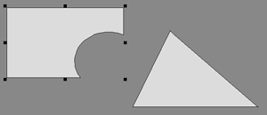
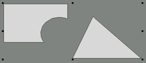
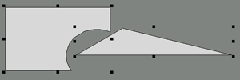

<!-- Documentation Xclamation (c)1994-2000 AXENE contact axene@axene.org>
<html>

<head>
<title>Frame Manipulations</title>
</head>

<body BGCOLOR="#FFFFFF" BACKGROUND="Images/back.gif" TEXT="#000000">

<p ALIGN="right"> </p>

<p><br>
<br>
There are two modes of frame selection: handle mode and peaked mode. The two modes are
similar, however handle mode allows for re-sizing of entire frame selections while peaked
mode may be used to change a frame's shape point by point. In both modes the user may
select, de-select, copy, move frames on the display screen, delete frames, shift them from
one document to another and change their features. <br>

<ol>
  <li><a NAME="select_frame"><b>Frame Selection</b>: Selecting a frame designates it as the
    recipient of later operations. A frame is selected when it is surrounded by handles or
    when its points are displayed. There are several ways to select one or more frames: </a><br>
    &nbsp; <ul>
      <li><b>simple selection</b>: to select a specific frame click inside the frame with the left
        mouse button. All previously selected frames will be de-selected. <br>
        &nbsp;</li>
      <li><b>multiple selection</b>: certain operations may affect several frames at the same
        time; in these cases the selection must contain more than one frame. Multiple selection is
        carried out in the same manner as simple selection while holding down the <tt>Shift</tt>
        key when clicking. In peaked mode the points of all selected frames are displayed; in
        handle mode the multiple selection is always surrounded by eight re-sizing handles. <br>
        &nbsp;</li>
      <li><b>selection by zone</b>: this selection mode selects all frames contained in a given
        rectangular region. <br>
        &nbsp; <ol>
          <li>Click with the left mouse button outside of any other frame. <br>
            &nbsp;</li>
          <li>Move the mouse while holding down the left button. <br>
            &nbsp;</li>
          <li>Release the button to designate an end-point. <br>
            &nbsp;</li>
        </ol>
        <p>All frames integrally contained within the rectangular zone as defined by the point of
        origin and the end point will be selected. The user may also hold down the <tt>Shift</tt>
        key throughout the entire operation in order that the frames from the newly selected zone
        will join with the preceding frame selection. </p>
        <p><br>
        </p>
      </li>
    </ul>
  </li>
  <li><a NAME="deselect_frame"><b>Frame De-selection</b>: There are two ways to de-select one
    or more frames: </a><br>
    &nbsp; <ul>
      <li><b>To De-select All</b>: simply click once with the left mouse button on the <a HREF="Document_Window.html#view_area">display screen</a> outside any other frame to
        de-select all frames. <br>
        &nbsp;</li>
      <li><b>Simple de-selection</b>: The user may de-select a particular frame from a multiple
        selection while keeping the others selected by holding down the <tt>Shift</tt> key, then
        clicking inside the frame to be de-selected. <br>
        &nbsp; </li>
    </ul>
  </li>
  <li><a NAME="move_frame"><b>Frame movement</b>: In order for a frame or frames to be moved
    they must be selected. There are two ways to move a selection.<br>
    <p><b>Method one</b>: <br>
    &nbsp; <ol>
      <li>Click on one of the selected frames to pick it up. <br>
        &nbsp;</li>
      <li>Move the mouse; the outline of the selected frame or frames will follow the movement to
        allow for re-positioning in the desired location. <br>
        &nbsp;</li>
      <li>Click again to place the selection at its new spot. <br>
        &nbsp;</li>
    </ol>
    <p>This <i>first method</i> allows use of the display screen's scrollbars to position the
    selection on the page. </p>
    <p><b>Method two</b>, or <b>drag and drop</b>: <br>
    &nbsp; <ol>
      <li>Click on one of the frames of the selection to pick it up; remain pressing the button. <br>
        &nbsp;</li>
      <li>Move the mouse; the outline of the selected frame or frames will follow the movement to
        allow for re-positioning in the desired location. <br>
        &nbsp;</li>
      <li>Release the mouse button again to place the selection at its new spot. <br>
        &nbsp;</li>
    </ol>
    <p>This <i>second method</i> allows the user to move frames both inside and outside of the
    </a><a HREF="Document_Window.html#view_area">display screen</a>. It allows a frame
    selection to be passed from one <a HREF="Document_Window.html">document window</a> to
    another. Using the second method it's also possible to delete a frame by dropping the
    frame selection in the <a HREF="Main_Interface.html#trash_icon_vbar">trash (icon)</a> on
    the vertical icon bar. </p>
    <p>In both cases its possible to cancel the movement in progress (before positioning the
    final destination point) by clicking on the right mouse button. Movement of frame
    selections is affected by magnetism. </p>
    <p><b>Note:</b> It's possible to move an non-selected frame using the second method. To do
    so, simply begin the first step by positioning the mouse on the frame to be moved. The
    frame will be automatically selected. </p>
    <p>&nbsp;</p>
  </li>
  <li><a NAME="dup_frame"><b>Copying a Frame</b>: Frame duplication is carried out in much the
    same manner as frame movement except that the <tt>Shift</tt> button must be held down
    during the entire operation. </a><br>
    &nbsp;</li>
  <li><a NAME="attributs_frame"><b>Frame Attributes</b>: Double-clicking on a frame, selected
    or not, calls up the '</a><a HREF="Box_Frame_Attributes.html">Frame attributes</a>' dialog
    box. If the frame is part of a multiple selection the features of all the frames of this
    selection may be changed from the dialog box. <br>
    &nbsp;</li>
</ol>

<p><br>
</p>

<hr>

<h2 align="center"><a NAME="handles_mode">Frame Selection in Handle Mode</h2>
</a>

<p><br>
Handle mode selection enables the following operations: re-sizing frame selection, <a HREF="Frame_Selection_Modes.html#select_frame">selecting</a>, <a HREF="Frame_Selection_Modes.html#deselect_frame">de-selecting</a>, <a HREF="Frame_Selection_Modes.html#dup_frame">copying</a>, <a HREF="Frame_Selection_Modes.html#move_frame">moving</a> frames and changing frame <a HREF="Frame_Selection_Modes.html#attributs_frame">attributes</a>. </p>

<h3>Simple Selection</h3>

<blockquote>
  <p>When a frame is selected, <b>handles</b> appear at the corners of the virtual rectangle
  circumscribing the frame, as well as at the midpoint of its sides. The handles at the
  corners allow the frame to be re-sized diagonally, and the handles in the middle of each
  side allow for vertical and horizontal re-sizing. </p>
  <p align="center"> <br>
  <small><i>Schema: Frame selection in handles mode </i></small></p>
  <p><br>
  </p>
</blockquote>

<h3>Simple re-sizing</h3>

<blockquote>
  <p>The mouse's cursor changes to an arrow shape when it approaches one of the eight
  handles, indicating in which direction the frame may be re-sized. To re-size a frame:<ol>
    <li>Pick up a handle by clicking on it with the left mouse button. <br>
      &nbsp;</li>
    <li>Move the mouse. <br>
      &nbsp;</li>
    <li>Release the handle by clicking again with the right button. <br>
      &nbsp;</li>
  </ol>
  <p>The user may also click on a handle and move it while keeping the mouse button engaged.
  Release the button once the new size is correct. </p>
  <p>Re-sizing is affected by magnetism. </p>
  <p><br>
  </p>
</blockquote>

<h3>Re-sizing and rotation</h3>

<blockquote>
  <p>Pressing the <tt>Shift</tt> key displays handles with the same angle of rotation as
  that of the selected frame. For example, when a rectangular frame is rotated, holding the <tt>Shift</tt>
  key allows the user to re-size the frame while conserving the frame's rectangular
  appearance (by conserving it's right angles). </p>
  <p align="center"> <br>
  <small><i>Schema: Rotated frame selection (with or without <tt>SHIFT</tt>) </i></small></p>
  <p><br>
  </p>
</blockquote>

<h3>Multiple Selection</h3>

<blockquote>
  <p>When multiple frames are selected the eight handles are placed on the outline of the
  virtual rectangle circumscribing the entire selection of all the frames. Moving these
  handles allows the user to re-size all the frames of the selection to the same degree. </p>
  <p align="center"> <br>
  <small><i>Schema: Multiple frame selection </i></small></p>
  <p><br>
  </p>
</blockquote>

<h3>Re-sizing a single frame from a multiple selection</h3>

<blockquote>
  <p>Each selected frame is surrounded by eight handles when the <tt>shift</tt> key is
  depressed. The handles appear on the outline of the virtual rectangle circumscribing the
  frame. This type of selection appears as if several simple selections are active at the
  same time; however, in this case the angle of rotation of each frame is taken into
  consideration as in selection rotation. </p>
  <p align="center"> <br>
  <small><i>Schema: Multiple frame selection with <tt>Shift</tt> key </i></small></p>
  <p align="center"> <br>
  <small><i>Schema: Re-sizing multiple frame selection </i></small></p>
  <p>Therefore in this case, holding down the <tt>shift</tt> key allows the user to change
  the size of individual frames in the selection while conserving their angles. </p>
  <p><br>
  </p>
</blockquote>

<h3>Cancelation while re-sizing</h3>

<blockquote>
  <p>Before releasing a handle it is possible to cancel the re-sizing operation in progress
  by clicking on the right mouse button. </p>
</blockquote>

<p><br>
</p>

<hr>

<h2 align="center"><a NAME="vertices_mode">Frame Selection in Peaked Mode</a></h2>

<p><br>
</p>

<p>Frame selection in peak mode enables the following operations: alteration of frame
shape point by point, <a HREF="Frame_Selection_Modes.html#select_frame">selection</a>, <a HREF="Frame_Selection_Modes.html#deselect_frame">de-selection</a>, <a HREF="Frame_Selection_Modes.html#dup_frame">copying</a>, <a HREF="Frame_Selection_Modes.html#move_frame">moving</a> frames on the display screen, and
changing frame <a HREF="Frame_Selection_Modes.html#attributs_frame">attributes</a>. </p>

<p>In this mode selected frames appear with a small handle at each point of each frame. </p>

<p align="center"> <br>
<small><i>Schema: Frame Selection in Peaked Mode </i></small></p>

<p>The user may move points individually to change a frame's shape by clicking on a point
to pick it up, moving it to another spot, then setting it down by clicking again. This
operation can also be performed on the sides of the frame. </p>

<p>The user may also delete or add points in this mode using icon buttons or the
corresponding roll-down menus. </p>

<p>Before placing the handle or side the user may cancel the movement in progress by
clicking on the right mouse button. </p>

<p>Movement of selected frames' points or sides is affected by magnetism. </p>

<p><br>
</p>

<hr>

<p ALIGN="right"></p>
</body>
</html>
